Myrtle Beach
April 2014

In April 2014 we took Jessica and Jasmine to Myrtle Beach.
The days covered the oceanfront sand, Ripley’s Aquarium (sharks, the tunnel, and the touch tank), and a stroll past the downtown statues and pier telescopes.

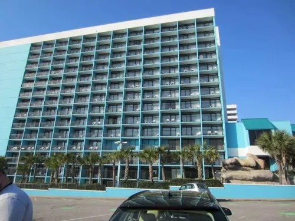


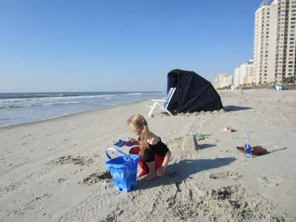

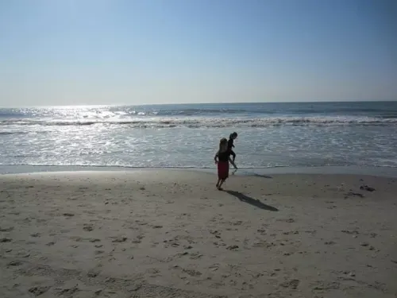

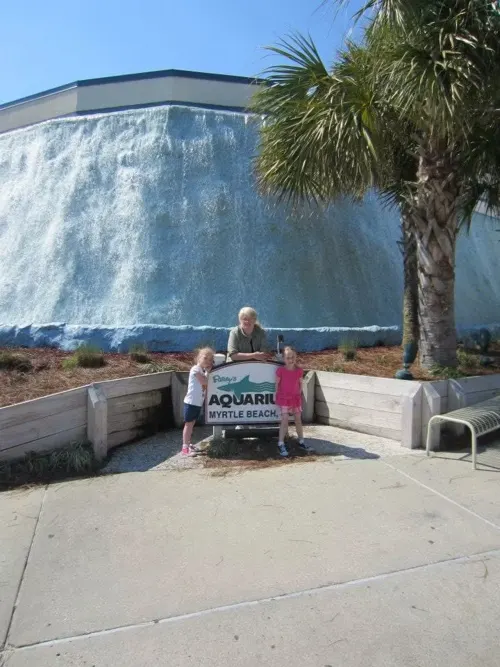

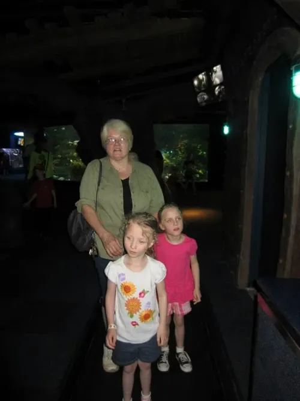

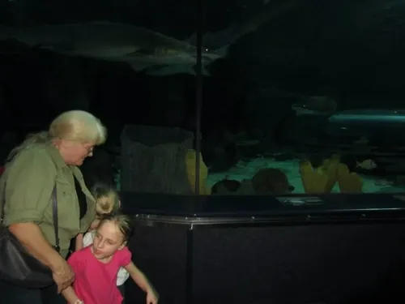

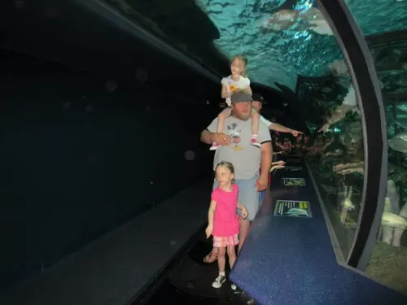

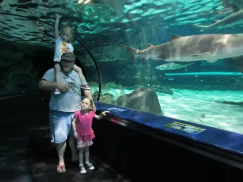

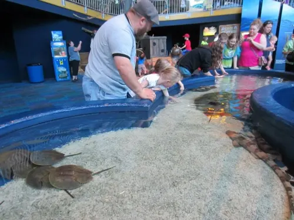

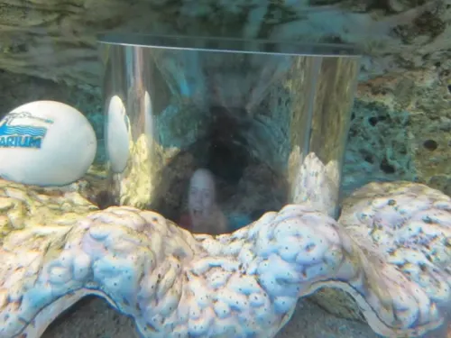

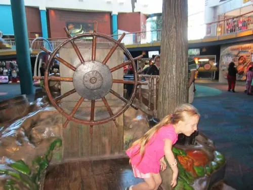

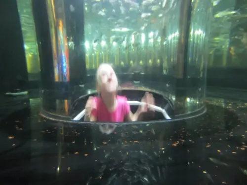

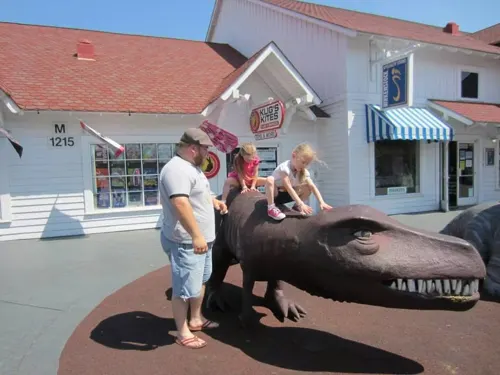

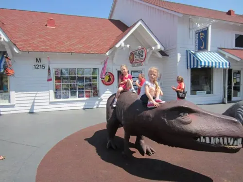

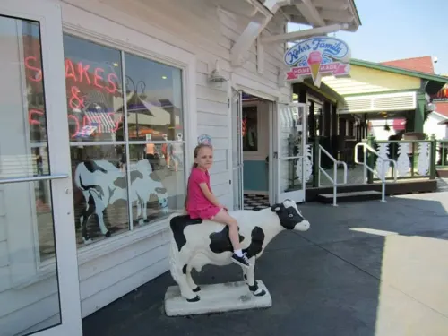